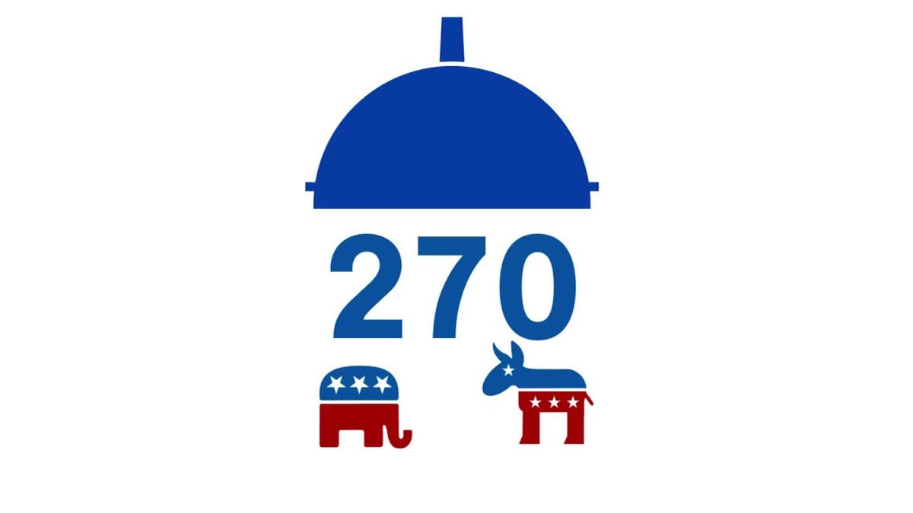

Critique on the Electoral College

The electoral college is what makes the US election so unique. Out of 40 countries that implement democratic voting to elect its head official, i.e. the President or the Prime Minister, only the United States use the electoral system. However, upon brief examination, it is fundamentally flawed. With some quick calculations, people in some states, typically with a small population, has more weight to the election than those in states with a bigger, denser population.
The electoral college one of the most intriguing, and quite frankly, confusing part of the United State's election process. It seems oxymoronic to claim to be the leading democratic power of the free world, while having some people's votes to be counted less than others. Why should, for example, a voter in California, possess 300% less electoral voting power than a voter in South Dekota? In the face of such unjust, why is the electoral college established? Moreover, if the abuse of this electoral college system is so exploitable, why has it not been eradicated?
A Brief Description of the Electoral College
In an attempt to answer this question, examination of governmental websites are exmained. In both archives.gov and state.gov , the reasoning behind the establishment of the electoral college system centralizes on the "compromise between the election of the President by a vote in Congress and election of the President by a popular vote of qualified citizens" . In otherwords, in governmental documents, the electoral college is established upon the dispute states rights versus federal power.
However, none of these sources rationally explain the preservation of the electoral college. One outstanding hypothesis, mentioned in archives.gov , states that the electoral college normalizes the difference in population in each state. In other words, because people in different states have vastly different interests in their well beings, the electoral college is justified to amply those who are underrepresented. Thus, here I intend to explore this hypothesis with simple descriptive anaylses.
A Descriptive Analysis of the Electoral College
The graph above displays the difference in voting power by state. The Y axis represents votes per elector, which is obtained from dividing the state's received votes during the 2020 presidential election by the amount of electoral votes the states are rewarded by. In other words, this graph display the amount of popular votes it takes in a state to get an electoral college vote; hence, the less popular votes per electoral college vote, the more power a voter has in the given state. As we can see, the electoral voting power differs drastically, ranging from almost 400 thousand votes per electoral vote in Florida, to a mere 92 thousand in Wyoming.
In fact, as we can see above, the voting power of states by presidential affiliation differs substantially. On average, the states that voted for Trump in 2020 holds 15% more voting power than those that voter for Biden. In an even eggregious display of voting power inbalance, for swing states in the 2020 election, states that voted for Trump hold almost 25% more voting power than those that voted for Biden. In other words, in the states that really matters, the ones that voted for Trump holds needed only 1.3 million votes for an electoral college vote, whereas Biden-won states needed 1.8 million votes to translate into an electoral college vote.
Thus, regardless of political rhetorics, the fact is the electoral college creates an imbalance in voting power in each state. What started as the negotiation between northern and sourthern states in the establishment in this country has turned into a political dreadlock that keeps the Republican party in power.
References
Archives.gov
States.gov
In Defense of the Electoral College
Both Candidates Might Fall Short Of 270 Electoral Votes On Election Night. But How Close Might They Get?